З'ясувати основні причини, напрями та наслідки трудової міграції з України, охарактеризувати основні заходи демографічної політики держави, типи систем розселення (міські, сільські) та їхні регіональні особливості; розвивати вміння аналізувати, узагальнювати та структурувати інформацію з тексту, карт і діаграм.
Обладнання: Інструкційні картки, презентація, атласи, статистичні дані.
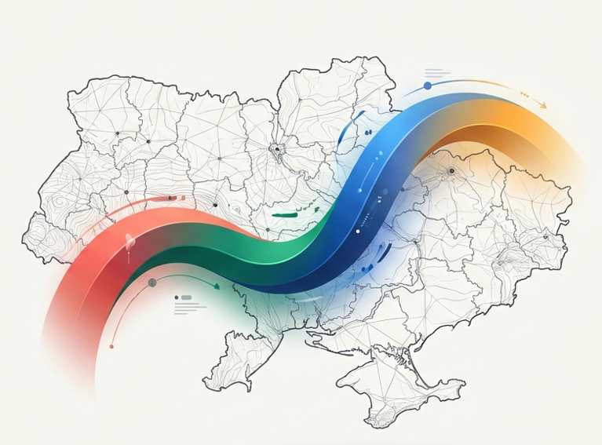
Україна має незначне позитивне сальдо міграції, проте структура міграції викликає занепокоєння. Країну залишають переважно кваліфіковані робітники та науковці, а прибувають — біженці та переселенці з Кавказу, Центральної та Східної Азії, Молдови, серед яких багато нелегальних мігрантів.
За даними Світового банку, Україна посідає 5-те місце у світі за кількістю емігрантів (близько 6,6 млн осіб). Основні причини:
Найбільш привабливими для українців є країни Європи (Польща, Чехія, Німеччина, Угорщина, Італія, Іспанія, Португалія), Росія, Канада, США. Важливо: найчастіше виїжджають люди працездатного віку (2/3 — від 15 до 39 років), майже 1/3 емігрантів мають вищу освіту.
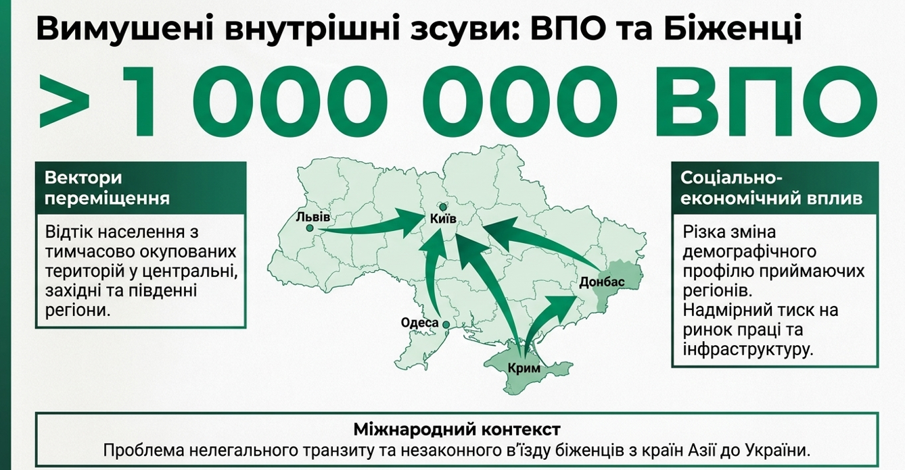
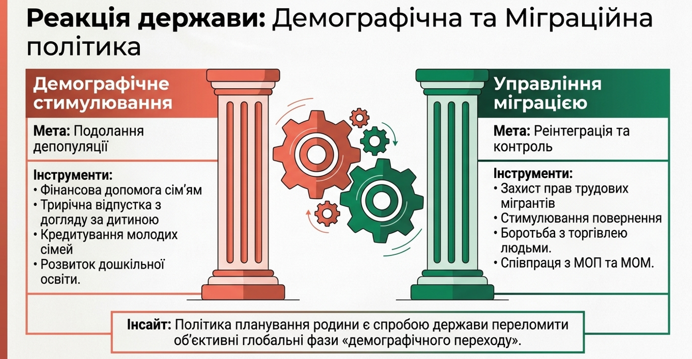
Через політичні причини (військова конфронтація на Донбасі з 2014 року) виникла проблема внутрішньо переміщених осіб (ВПО). Понад 1 млн людей змушені були переселитися з окупованих територій Донецької та Луганської областей в інші регіони України.
Україна бере участь у міжнародних програмах (МОП, МОМ) з метою захисту прав мігрантів, боротьби з торгівлею людьми та надання допомоги біженцям.
Демографічна політика України орієнтована на стимулювання народжуваності та підтримку сімей. Вона багато в чому запозичена із загальноєвропейського досвіду.
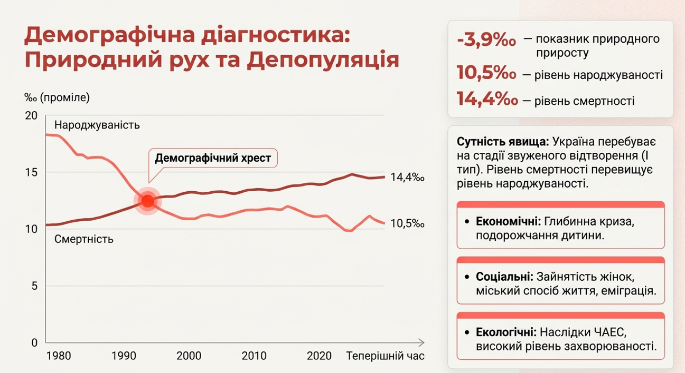
Грошова допомога при народженні дитини, кредитування молодих сімей, допомога самотнім батькам.
Передпологова відпустка та трирічна відпустка для догляду за дитиною, розвиток системи дошкільної освіти (щоб жінка могла працювати).
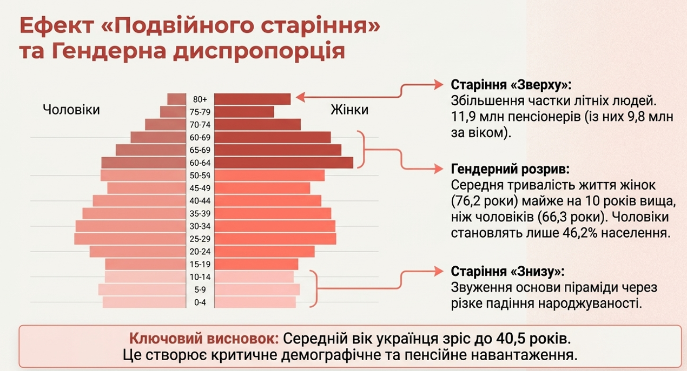
Важливими напрямами також є збереження здоров’я матері та дитини, а також громадянська захищеність населення як чинник поліпшення демографічної ситуації.
Рівень урбанізації в Україні високий — 69,2%. Найвищі показники — у промислових областях сходу та центру, найнижчі — у західних.
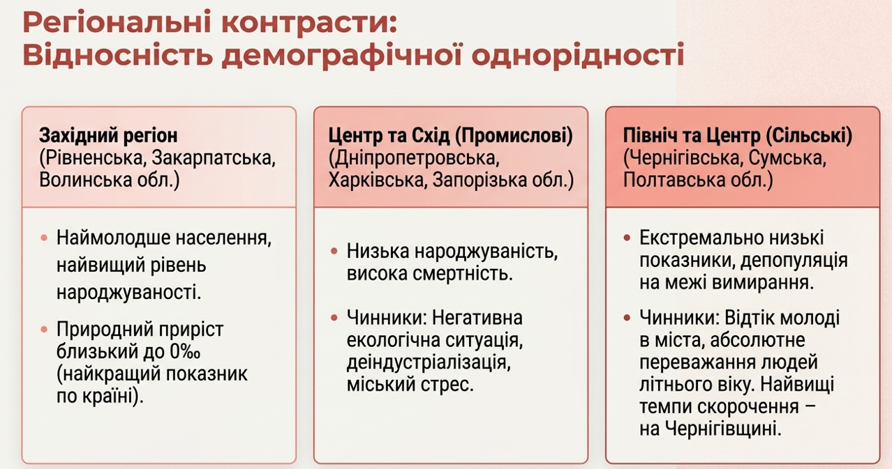
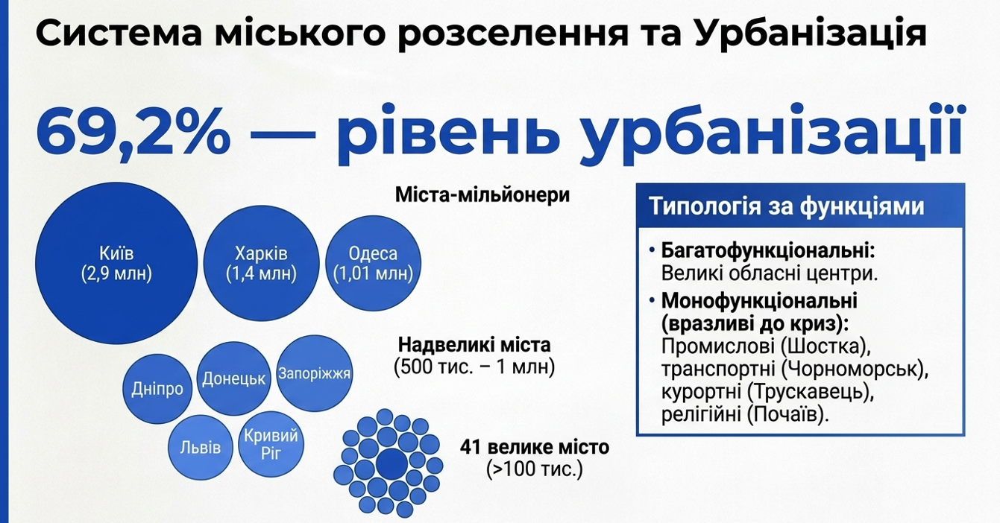
В Україні налічується 19 агломерацій, де проживає близько 36% населення. Вони бувають:
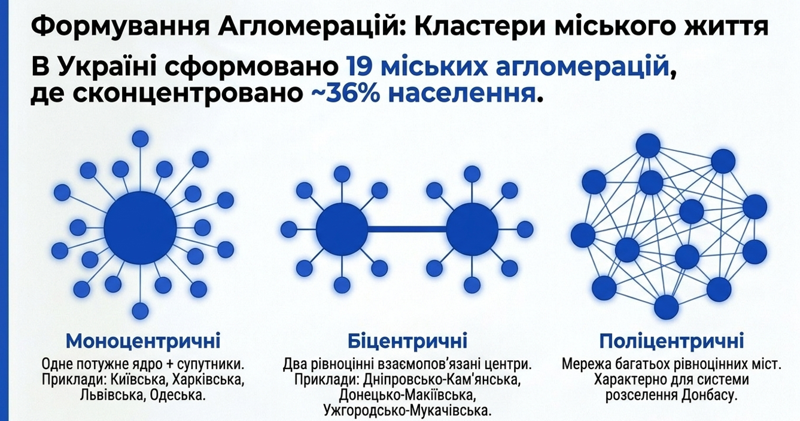
В Україні понад 28 300 сіл. Переважаючою формою є групова (великі села у поєднанні з хуторами), проте їхні риси суттєво відрізняються залежно від регіону.
Тип: Вододільний. Малі села (200–500 осіб). Розташовані на підвищених вододілах річок, подалі від заболочених долин. Переважають одновуличні села. Іноді трапляється хуторський тип.
Тип: Долинно-яружний. Великі села (500–1500 осіб). У Лісостепу — в долинах річок та ярах, у Степу — у балках (ближче до ґрунтових вод). Села часто мають форму правильної «шахівниці».
Тип: Гірсько-долинний. Життя концентрується в міжгірських улоговинах і долинах річок, зазвичай не вище 800 м над рівнем моря (вище — лише літні полонини). Поселення витягнуті вздовж річок і доріг.
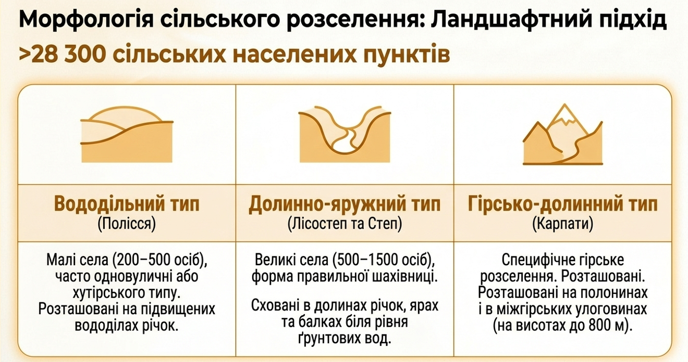
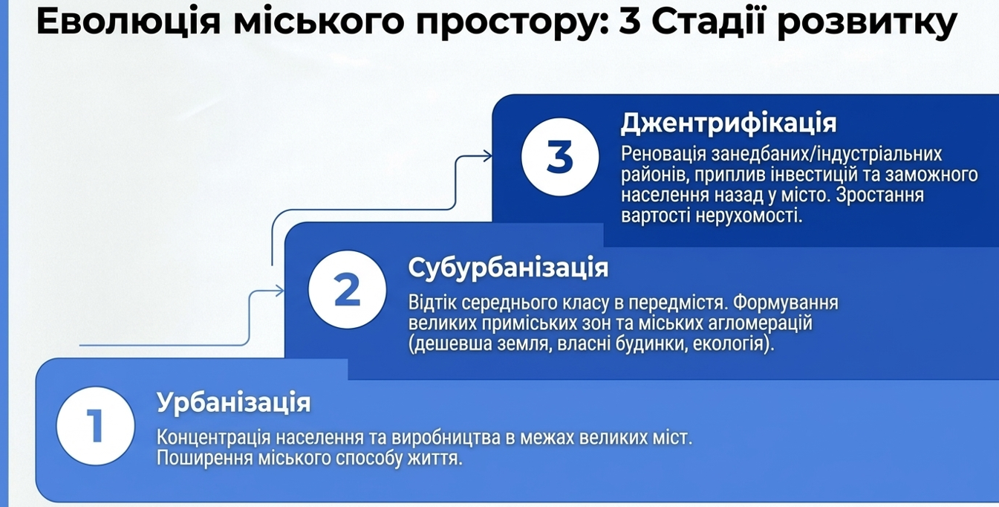
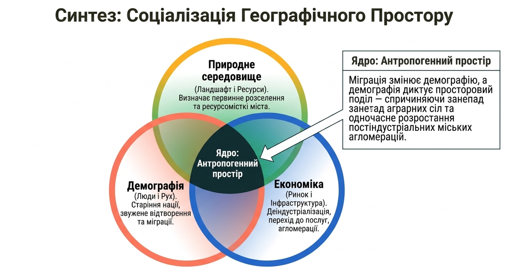
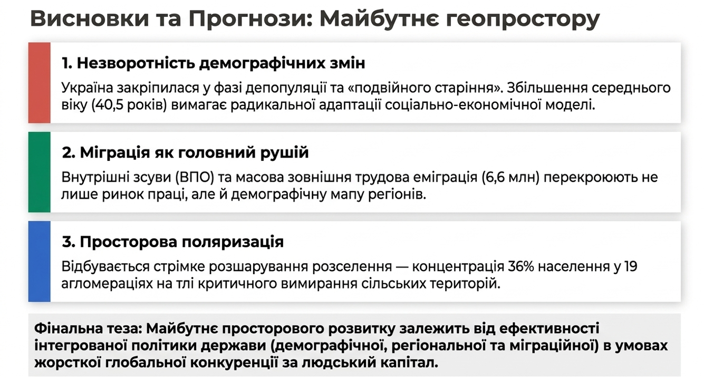
Конспект заняття з географії. Оформлено для зручного читання та друку.